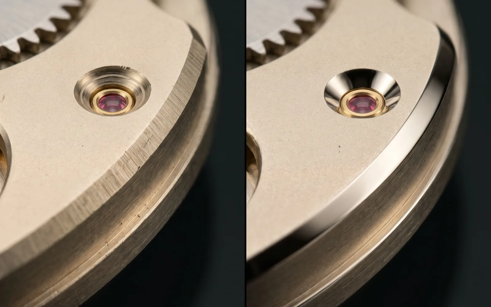
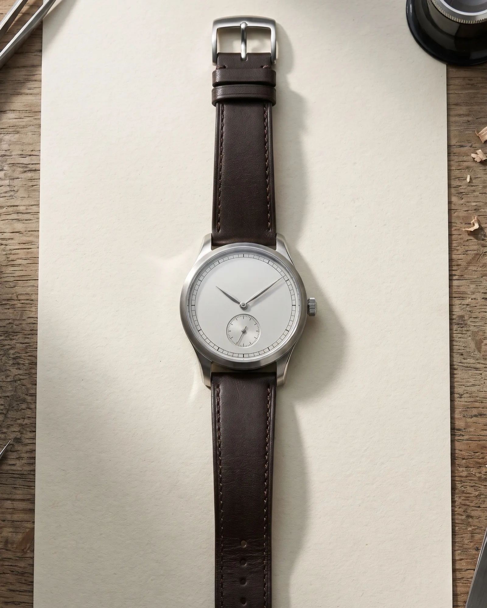
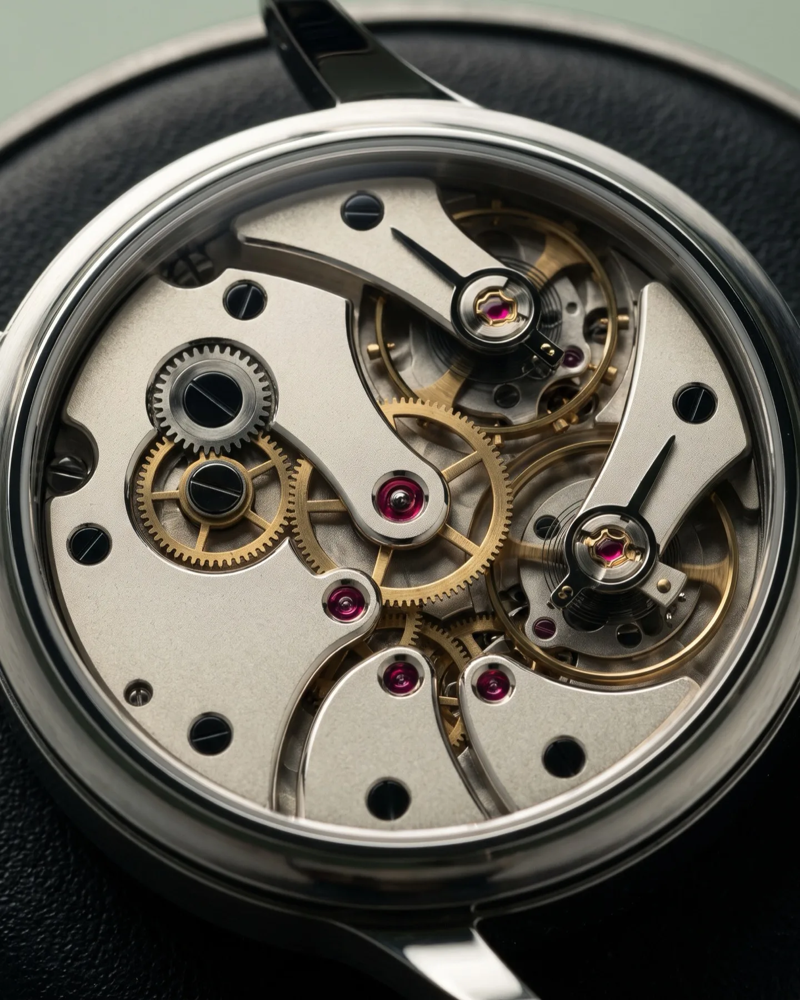
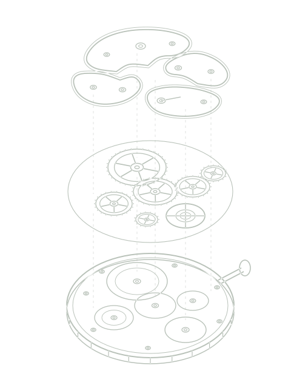
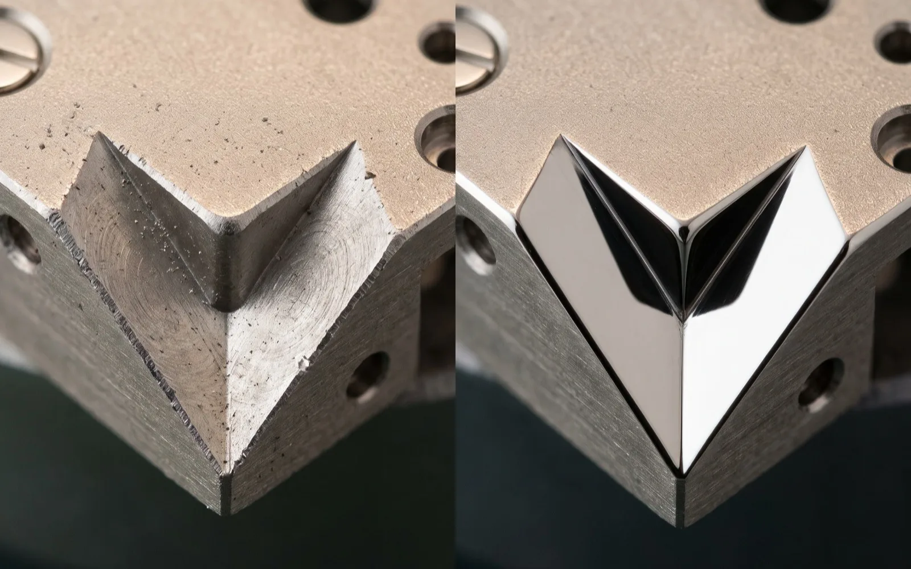
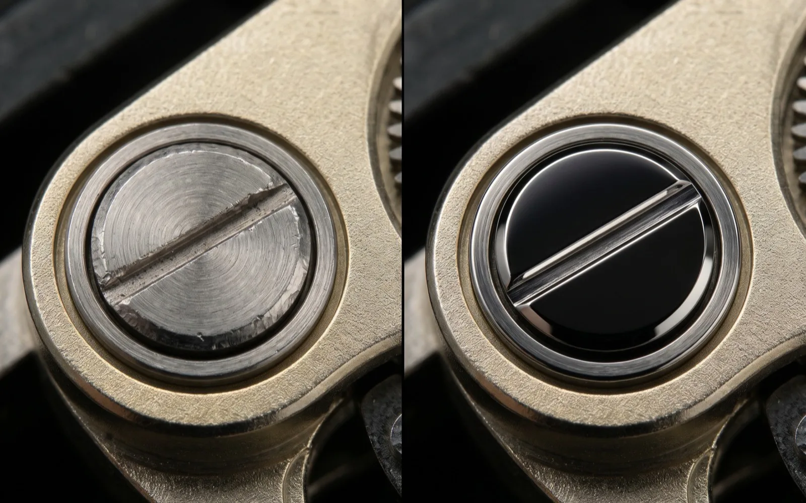
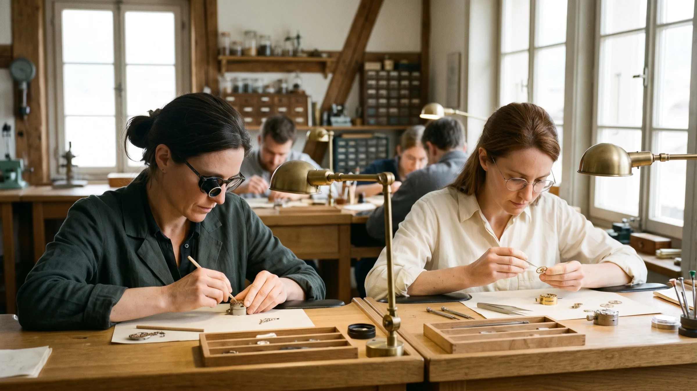
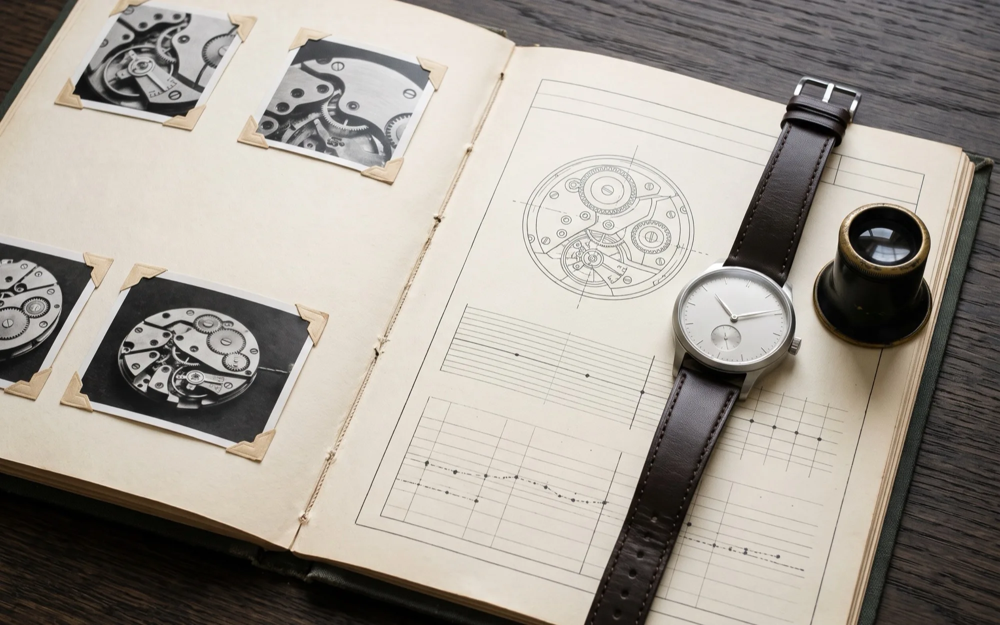
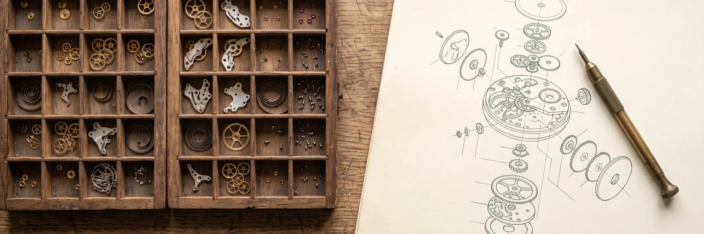
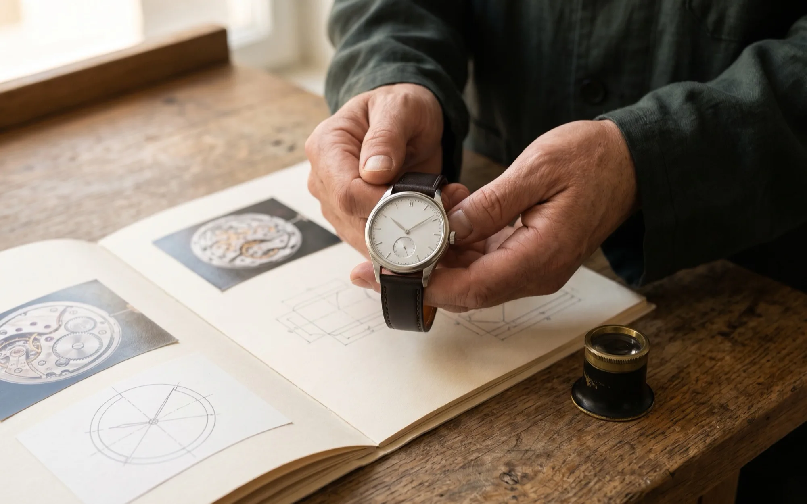

Hand-rounded bevels
The bridge edge is rounded and polished by hand.
See this operation in the dossier: hand-rounded bevelsFLEURIER · INDEPENDENT WATCHMAKING
The T-01. A manually wound, small-seconds watch in steel. Made for regular wear and close examination.
CHF 48,000 before tax.
Also made with a charcoal dial.
In Fleurier or by video.

01 / THE CALIBRE
Individually removable bridges in German silver (nickel, copper and zinc). A conventional Swiss lever escapement: lever, escape wheel and balance. Construction the next watchmaker can read.


02 / UNDER MAGNIFICATION
The T-01’s bridges are cut in our Fleurier workshop, then bevelled and polished by hand.

The bridge edge is rounded and polished by hand.
See this operation in the dossier: hand-rounded bevels
These four internal corners are finished by hand and named in the dossier.
See this operation in the dossier: four inward corners
Steel is polished flat to a mirror finish.
See this operation in the dossier: black-polished steel03 / THE WORKSHOP
Founded in 2016 by restoration watchmaker Alix Talvrenne and movement constructor Éline Dervaillet. Today, 24 people complete approximately 240 watches a year.
We machine our plates, bridges and train wheels. Specialist partners supply cases, crystals, jewels, springs and straps; their contributions are recorded.

The founders still own the house. Four years of development produced the first manually wound calibre. The workshop maintains one core movement platform, directing development toward finishing, reliability and repair.
04 / THE DOSSIER
Before assembly, we photograph the surfaces that will disappear beneath the dial. Those photographs accompany your watch, together with its rate results and service drawings.

This demonstration shows the records supplied with a watch. Photographs, signatures and test charts shown here are illustrative.
Hand-rounded bevels, four inward corners and black-polished steel fittings are identified separately. The finish map distinguishes handwork from machine operations.
The map marks this bridge edge as hand-rounded and polished, separate from machine operations.
The map marks these internal corners as finished by hand, separate from machine operations.
The map marks these steel fittings as flat mirror polishing, separate from machine operations.
The dossier identifies the assembler and inspector. The fifteen-day cased-watch report records positions, winding states, results and acceptance criteria.
Assembly drawings, a parts catalogue, material specifications and lubrication instructions accompany the watch.
05 / OWNERSHIP
Your repair pack includes assembly drawings, a parts catalogue, material specifications and lubrication instructions. Qualified independent repairers have permission to use them. The repair pack states that a working independent watchmaker may use those documents.

Service-critical spares are stocked against a written 25-year commitment, supported by a reserve funded from each sale. The commitment covers those parts. Workshop labour is quoted before any work. It does not include free maintenance. Movement changes are recorded by revision, with compatibility stated explicitly.
Contact the workshop. Discuss the assessment and agree the work. Your watch returns with its service record updated.
06 / AN INVITATION
Handle the T-01, inspect its finishing under magnification and discuss its construction, delivery and care with a watchmaker.
Your first independent watch? You are welcome here.
In Fleurier or by video.
